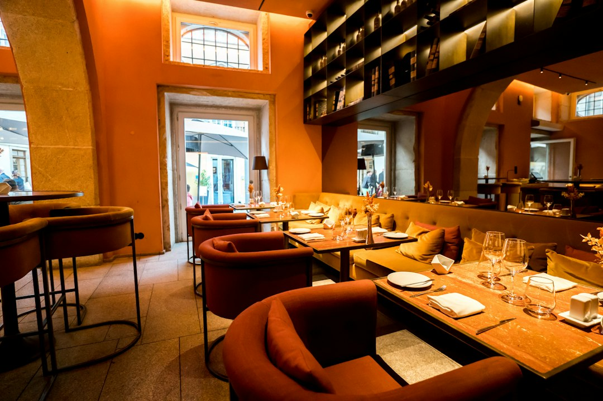

Da Valencia al Successo Globale: Come Smart Experience Rivoluziona il Settore Ho.Re.Ca. fra Tradizione e Innovazione

Da Valencia al mondo: il successo della paella tra tradizione e innovazione per ristoratori, chef e titolari Ho.Re.Ca.
- La ristorazione moderna deve integrare tradizione e innovazione per non perdere competitività.
- I metodi manuali di gestione menu e servizio rallentano e complicano l’esperienza cliente.
- Smart Experience / Taste Engine di RM Studio è la soluzione digitale che trasforma l’offerta in emozione e massimizza l’efficienza operativa.
Analisi approfondita della notizia e delle implicazioni operative
La notizia di Ristorazione Italiana Magazine sul successo internazionale della paella, simbolo della tradizione valenciana che diventa fenomeno globale, sottolinea un aspetto cruciale per il settore Ho.Re.Ca.: il connubio fra tradizione e innovazione è determinante per la crescita e la riconoscibilità del proprio brand. Il percorso di questo piatto iconico riflette una dinamica interessante. Da un lato c’è l’esigenza di mantenere viva l’identità culturale e il valore autentico della ricetta originale; dall’altra, la necessità di adottare strumenti moderni per comunicare, raccontare e proporre il prodotto in maniera immersiva e contemporanea ai clienti, siano essi clienti locali o internazionali.
Per ristoratori, chef e titolari di locali, riuscire a valorizzare la propria offerta tra sapori consolidati e modalità innovative di presentazione è ormai un imperativo operativo. Questo vale in modo particolare quando si affrontano mercati esigenti, dove la concorrenza non si misura solo sulla qualità, ma sull’esperienza d’acquisto complessiva: dalla capacità di illustrare piatti e ingrediente all’attenzione alle esigenze alimentari specifiche come allergeni e intolleranze.
Le conseguenze e i costi di non agire
Mentre la paella si diffonde capace di rinnovarsi senza perdere la propria essenza, la realtà quotidiana di molti locali italiani e internazionali è spesso ancora legata a processi manuali e tradizionali che frenano la crescita. L’utilizzo di menu PDF statici, spesso di scarsa qualità visiva e grafica (spesso sgranati e poco fruibili), unito a camerieri troppo impegnati a gestire ordini, spiegazioni e richieste allergeni, genera inefficienze e rischi operativi.
Il risultato è un’esperienza cliente incerta e spesso deludente, con addetti al servizio oberati che non riescono a valorizzare il racconto di ogni portata. Il potenziale coinvolgimento emotivo e la fidelizzazione ne risentono, tradotto in minor durata della permanenza al tavolo e conseguente perdita di fatturato.
Il costo nascosto è doppio: da un lato la perdita di opportunità di upselling (come suggerimenti di abbinamenti vini personalizzati) e dall’altro il rischio di errori dovuti a incomunicabilità o mancanza di informazioni accurate, che oggi il cliente richiede sempre di più, soprattutto in ristoranti di fascia medio-alta e gourmet.
Come Smart Experience / Taste Engine risolve il problema
RM Studio risponde a questa sfida con Smart Experience / Taste Engine, un SaaS pensato per ristoratori, chef e titolari di locali che vogliano abbracciare l’automazione intelligente senza rinunciare alla personalizzazione e alla cura artigianale dell’offerta di piatti.
Si tratta di un e-menu interattivo dotato di un Maître Virtuale AI integrato, che funziona come un assistente conversazionale in stile WhatsApp, capace di rispondere in tempo reale a domande su ingredienti, modalità di preparazione e allergeni. Questo permette ai camerieri di concentrarsi maggiormente sul servizio al tavolo, riducendo i tempi di attesa e aumentando la capacità di essere presenti con il cliente.
Al contempo, il sistema include funzionalità avanzate di abbinamento vini tramite un Sommelier digitale, suggerendo combinazioni gourmet basate sui piatti ordinati, migliorando così l’esperienza sensoriale complessiva e contribuendo ad aumentare il valore medio dello scontrino.
La narrazione diventa protagonista grazie allo storytelling integrato, che arricchisce ogni piatto con storie legate alla tradizione, video dell’atmosfera del locale e fotografie curate, rendendo il menu un vero e proprio viaggio emozionale per il cliente. Tutto ciò si traduce in un coinvolgimento superiore e fidelizzazione più efficace, senza dover investire in personale aggiuntivo o formazione continua.
Infine, Smart Experience / Taste Engine si propone con un modello di prezzo unico e trasparente: uno sblocco una tantum a €390.00 senza costi ricorrenti, accompagnato da un jingle promozionale personalizzato, che fa della soluzione un investimento concreto e facilmente calcolabile dal punto di vista economico.
| Gestione Tradizionale | Con Smart Experience / Taste Engine |
|---|---|
| Menu PDF statici, spesso di bassa qualità visiva e poco interattivi | E-menu interattivo con Maître Virtuale AI per assistenza immediata e personalizzata |
| Camerieri oberati da richieste e spiegazioni, con rischio di errori e rallentamenti | Riduzione del carico sui camerieri, con migliore qualità del servizio e minor tempo di attesa |
| Nessuna integrazione digitale per suggerimenti su abbinamenti enogastronomici | Sommelier digitale integrato per abbinamenti vini ottimizzati con i piatti scelti |
| Difficoltà a raccontare la storia e l’atmosfera culinaria in modo coinvolgente | Storytelling e video integrati per un’esperienza immersiva e differenziante |
| Costi nascosti e incerti legati a formazione personale e aggiornamenti dei menu | Prezzo una tantum di €390.00 con supporto incluso e senza abbonamenti annui |
💡 Ti è stato utile questo approfondimento?
Condividilo con un collega o un amico del settore Ristoratori, Chef, Titolari di Locali e Attività Ho.Re.Ca. a cui potrebbe interessare!
FAQ - Domande frequenti per professionisti della ristorazione
1. Come Smart Experience migliora la gestione delle informazioni su allergeni?
Il Maître Virtuale AI risponde in tempo reale a tutte le domande riguardanti allergeni presenti nei piatti, garantendo sicurezza e tranquillità sia per i clienti che per il personale di sala.
2. Qual è il valore aggiunto dell’abbinamento vini integrato?
Il Sommelier digitale suggerisce combinazioni ottimali basate sul menu ordinato, aumentando così la soddisfazione enogastronomica e le possibilità di upselling.
3. È necessario avere competenze tecnologiche per utilizzare Smart Experience?
Il sistema è stato progettato per essere intuitivo e user-friendly, con un setup semplice e assistenza inclusa per un’implementazione rapida senza necessità di formazione complessa.
Inizia Subito
Sblocco una tantum a €390.00 senza abbonamenti con Jingle promozionale incluso.
Fonti Ufficiali e Risorse Esterne
Scopri l'Intelligenza Artificiale per la tua attività
Ottimizza i processi e aumenta le vendite con le soluzioni B2B di RM Studio.
Scopri Smart Experience / Taste Engine